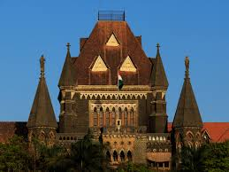
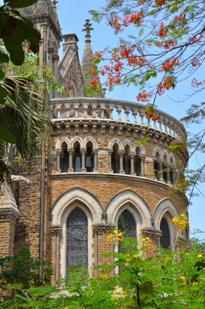
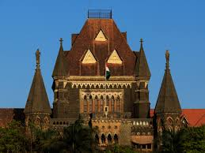
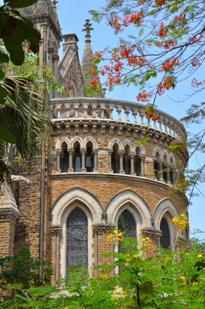
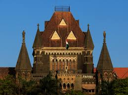
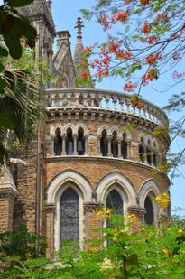

The Victorian Gothic and Art Deco Ensembles of Mumbai is a UNESCO World Heritage Site located in the city of Mumbai, India. It consists of two distinct architectural styles that reflect different periods of Mumbai's history. The Victorian Gothic ensemble showcases the architectural influence of the British Raj during the 19th century. It features a blend of Victorian and Neo-Gothic styles, characterized by pointed arches, intricate detailing, and ornate facades. Many prominent buildings such as the Chhatrapati Shivaji Terminus (formerly Victoria Terminus), University of Mumbai, High Court, and Rajabai Clock Tower are part of this ensemble. These structures, constructed primarily with local basalt stone, exhibit a grand and imposing presence. On the other hand, the Art Deco ensemble represents the architectural style that emerged during the early 20th century, particularly between the 1930s and 1940s. This style reflects the influence of international Art Deco movement but with a local interpretation. The buildings in this ensemble showcase sleek lines, geometric patterns, and decorative motifs. Some notable examples include the Eros Cinema, New India Assurance Building, and the Regal Cinema. Together, the Victorian Gothic and Art Deco Ensembles of Mumbai represent the city's architectural heritage and the cultural exchange that occurred during its history. These ensembles reflect the aspirations and aspirations of Mumbai's past and stand as a testament to the city's rich architectural legacy. The inclusion of this site on the UNESCO World Heritage list recognizes its outstanding universal value and the need for its preservation and protection for future generations.
Weather : 28 - 31°C Label : Top Attraction Timings : All Time Time Required : 2-3hours Entry Fee : No entry fees